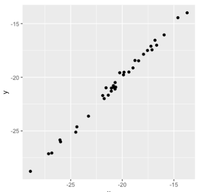

# Import poisson from scipy.stats
from scipy.stats import poisson
# Probability of 5 responses
prob_5 = poisson.pmf(5, 4) # (deseado, media)
print(prob_5)0.1562934518505317Proceso de Poisson
Procesos que parecen ocurrir a un ritmo determinado, pero completamente aleatorio.
Ejemplos:
El número de animales adoptados de un refugio por semana.
El número de personas que llegan a un restaurante cada hora.
El número de terremotos al año en California.
La unidad de tiempo, como, horas, semanas o años es irrelevante siempre que sean coherentes.
Distrubición de Poisson
La probabilidad de que ocurra un número determinado de sucesos en un periodo de tiempo.
Ejemplos
Probabilidad de >= 5 animales adoptados en una semana.
Probabilidad de que 12 personas lleguen a un restaurante en una hora.
Probabilidad < 20 terremotos en California en un año.
Lambda (\(\lambda\))
\(\lambda\): Número de eventos promedio por intervalo de tiempo.
Número promedio de adopciones por semana = 8.

Lambda es el pico de la distribución

CTL continúa aplicando

Ahora que has aprendido sobre la distribución de Poisson, sabes que su forma se describe mediante un valor llamado lambda. En este ejercicio emparejarás histogramas con valores lambda.
| lambda = 1 | lambda = 4 | lambda = 8 |
|---|---|---|
|  |  |
 |
La distribución de Poisson es una familia de distribuciones, igual que las distribuciones uniforme, binomial o normal.
Tu empresa utiliza un software de ventas para hacer un seguimiento de los nuevos clientes potenciales. Los organiza en una cola para que cualquiera pueda hacer el seguimiento de uno cuando tenga un poco de tiempo libre. Dado que el número de respuestas de clientes potenciales es un resultado contable a lo largo de un periodo de tiempo, esta situación corresponde a una distribución de Poisson. De media, Amir responde a 4 clientes potenciales cada día. En este ejercicio, calcularás las probabilidades de que Amir responda a distintos números de clientes potenciales.
poisson de scipy.stats y calcula la problabilidad de que Amir responda a 5 clientes potenciales en un día, dado que responde a una media de 4.# Import poisson from scipy.stats
from scipy.stats import poisson
# Probability of 5 responses
prob_5 = poisson.pmf(5, 4) # (deseado, media)
print(prob_5)0.1562934518505317# Probability of 5 responses
prob_coworker = poisson.pmf(5, 5.5) # (deseado, media)
print(prob_coworker)0.17140068409793663# Probability of 2 or fewer responses
prob_2_or_less = poisson.cdf(2, 4) # <= cdf(deseado, media)
print(prob_2_or_less)0.2381033055535443# Probability of > 10 responses
prob_over_10 = 1 - poisson.cdf(10, 4)
print(prob_over_10)0.0028397661205137315Tener en cuenta que si se proporciona poisson.pmf o poisson.cdf con un número no entero , arroja un error ya que la distribución de Poisson solo se aplica a enteros.
Distribución exponencial
Probabilidad en que transcurra cierto tiempo entre eventos de Poisson.
Ejemplos
Probabilidad > 1 día entre adopciones.
Probabilidad < 10 minutos entre llegadas a restaurantes.
Probabilidad de 6 a 8 meses entre terremotos.
También usa lambda \(\lambda\)
Continua (tiempo)
Valor esperado de la distribución exponencial
Distribución T (estudiante)
Grados de libertad (DoF)
Tiene un parámetro de grados de libertad (df) que afecta el grosor de las colas de la distribución.
Bajo df = Colas más gruesas y mayor desviación estandar.
Alto df = Similar a la distribución normal.
Distribución Log-normal
Las variables que siguen una distribución log-normal tiene un logaritmo que se distribuye normalmente. Da lugar a distribuciones sesgadas.
Ejemplos
Duración de las partidas de ajedrez.
La presión arterial en adultos.
Número de hospitalizaciones en el brote de SARS en el 2003.
Llegados a este punto, has aprendido sobre tantas distribuciones de probabilidad diferentes que puede ser difícil recordar cuál es cuál. En este ejercicio, practicarás la distinción entre distribuciones y la identificación de la distribución que mejor se ajusta a distintas situaciones.
| Poisson | Exponencial | Binomial |
|---|---|---|
| Número de clientes que entran a una tienda cada hora. | Tiempo que transcurre hasta que alguien paga su préstamo. | Número de personas de un grupo de 30 que aprueban el examen de conducir. |
| Número de productos vendidos cada semana. | Tiempo que transcurre hasta que el siguiente cliente realiza su compra. |
Para evaluar mejor el rendimiento de Amir, quieres saber cuánto tarda en responder a un cliente potencial después de abrirlo. De media, responde a 1 solicitud cada 2,5 horas. En este ejercicio, calcularás las probabilidades de que pasen diferentes cantidades de tiempo entre que Amir recibe un cliente potencial y envía una respuesta.
expon desde scipy.stats. Cuál es la probabilidad de que Amir tarde menos de una hora en responder a un cliente potencial.# Import expon from scipy.stats
from scipy.stats import expon
# Print probability response takes < 1 hour
print(expon.cdf(1, scale=2.5))0.3296799539643607# Print probability response takes > 4
print(1 - expon.cdf(4, scale=2.5))0.20189651799465536# Print probability response takes 3-4 hours
print(expon.cdf(4, scale=2.5) - expon.cdf(3, scale=2.5))0.09929769391754684Hay solo alrededor de un 20% de probabilidad de que Amir tarde más de 4 horas en responder, así que es bastante rápido en sus respuestas.
Qué afirmación no es cierta respecto a la distrubución t?